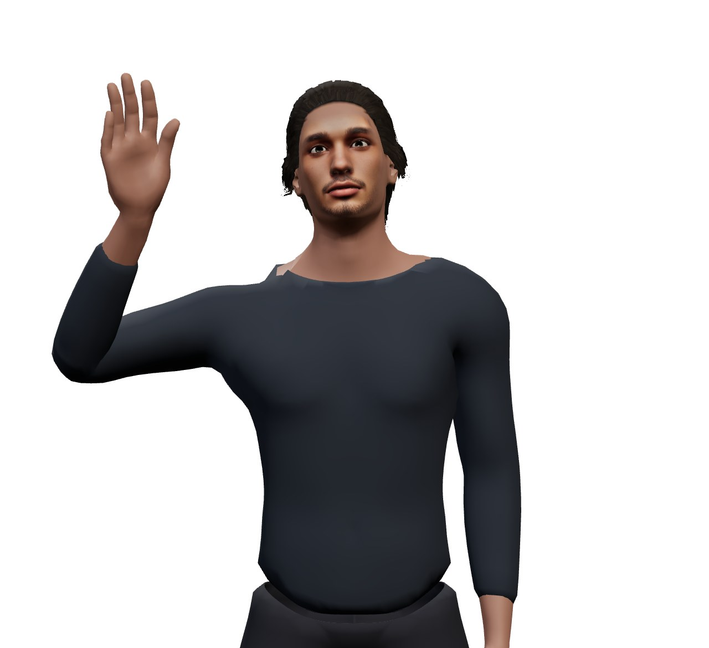

SignBridge
Reads American Sign Language from a laptop camera, says it out loud, and signs back what it hears.
Open the app Runs on your laptop · start it with sign-bridge
- Signs it reads
- 250 in ASL, 40 Urdu letters in PSL
- Runs on
- A laptop and its webcam
- Listening
- Whisper, offline
- Answering
- A 3D person who signs

■ How it works
Hands, body and lips in. A sentence out.
When you sign
- The webcam tracks you. MediaPipe finds both hands, the upper body and the lips, 94 points in every frame.
- Each sign is cut out. The app watches the hands' speed to tell where a sign starts and ends.
- Two models name it. Two trained Conv1D-Transformers vote among 250 signs. Below 35% confidence, the app shows "not sure".
- It speaks. A language model turns the signs into an English sentence, and the laptop says it.
When they answer
- It listens. Whisper writes down what was said, without an internet connection.
- It reorders. The words go into ASL order.
- The 3D person signs it, one sign after another, with a red mark wherever a finger touches the face.
Drawn live from the 3D person above, in the same pose. The model reads the 94 solid points as 188 numbers a frame, centred on the chest and scaled by shoulder width.
■ Results
Tested on people it never saw.
73.27%Three models answering together on Kaggle's unseen signers, 250 signs
89.9%Right through the live app, ASL Citizen clips played frame by frame
3.8%Wrong in that same test; the rest it marks "not sure"
90.7%Urdu letters in PSL, UAlpha40 test set
ASL Citizen's style of video was part of training, its signers were not, so it is the easier of the two tests.
■ Limits
What it can't do yet.
- One sign at a timeIt knows 250 isolated signs. Continuous signing is future work.
- Placement mattersDAD signed at the temple is read as DONKEY, because that is where DONKEY is made.
- Letters, not words, in PSLPakistan Sign Language covers the 40 Urdu letters only.
- New rooms are harderA camera, light or background unlike its training video can lower accuracy.